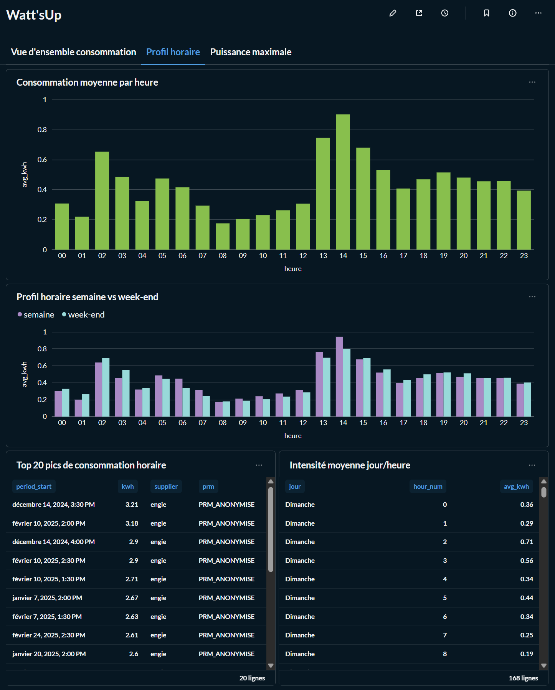
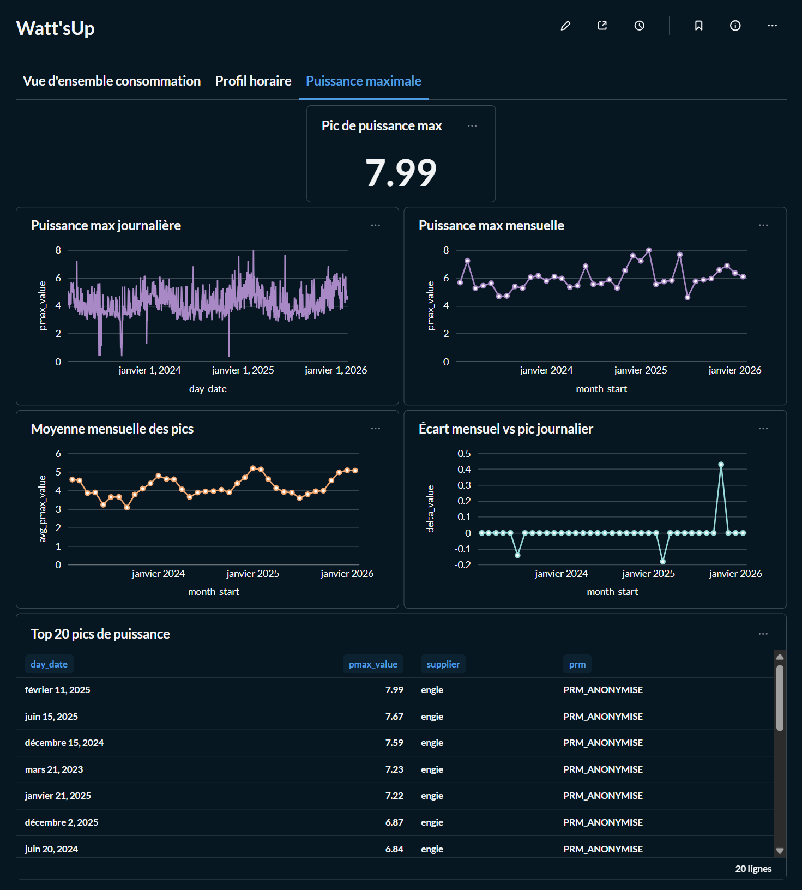

Watt'sUp — Suivi conso électricité
Watt’sUp est un projet portfolio complet construit à partir d’exports réels Engie. J’y ai mis en place un pipeline local reproductible : ingestion Python, stockage dans PostgreSQL, transformation avec dbt, tests de qualité, puis restitution dans Metabase.
Données intégrées
Mensuel + horaire + puissance max
Dashboards
3 vues analytiques
Qualité
92 tests dbt
Ce que je démontre
Ingestion de fichiers hétérogènes, séparation
raw / staging / marts,
tests dbt, pipeline reproductible et dashboards lisibles.
Ce que j’améliore ensuite
Multi-fournisseurs, harmonisation métier kW/kVA, alertes sur anomalies,
enrichissement météo et documentation plus produit.

